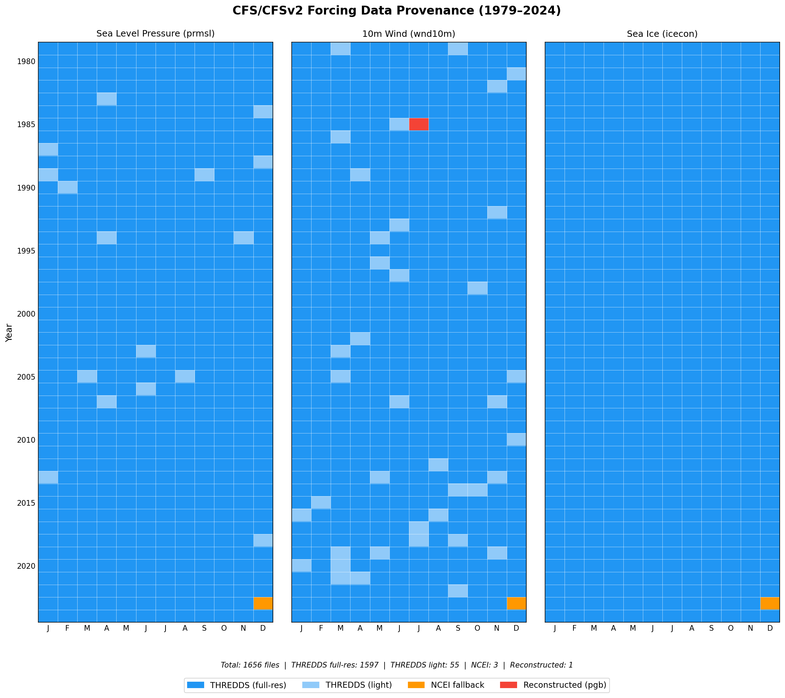

The CFS reanalysis scenario is a 46-year historical hindcast (1979–2024) driven by atmospheric forcing from the NCEP Climate Forecast System. This is the primary reanalysis run for the SurgeMIP intercomparison, providing a continuous baseline of global storm surge over the satellite era.
Forcing data comes from two generations of the NCEP Climate Forecast System:
The Climate Forecast System Reanalysis is a global, high-resolution coupled atmosphere–ocean–land–sea ice reanalysis produced by NCEP. The atmospheric component runs at T382 spectral resolution (~38 km) with 64 vertical levels from the surface to 0.26 hPa. The ocean model uses 0.25° equatorial spacing (0.5° elsewhere) with 40 levels. CFSR assimilates satellite radiances, conventional observations, and ocean/ice data to produce a consistent global atmospheric state estimate.
The Climate Forecast System version 2 is the operational successor to CFSR, maintaining the same coupled architecture with improvements to model physics, data assimilation, and the underlying GFS atmospheric model. CFSv2 provides a seamless extension of the reanalysis record into the present day.
| Atmosphere resolution | T382 (~38 km), 64 vertical levels |
| Ocean resolution | 0.25° equatorial / 0.5° global, 40 levels |
| Output grid | 0.5° × 0.5° latitude–longitude |
| Temporal resolution | Hourly (output), 6-hourly (analysis cycles) |
| Format | GRIB-2 |
| Producer | NCEP / NWS / NOAA |
Three surface variables are extracted from the CFS/CFSv2 pressure-level GRIB2 archives and converted to ADCIRC-compatible NetCDF forcing files:
| fort.221.nc | Sea level pressure (prmsl) — mean sea level pressure in Pa |
| fort.222.nc | 10-meter wind (wnd10m) — u and v wind components in m/s |
| fort.225.nc | Sea ice concentration (icecon) — fractional ice cover (0–1) |
Conversion is performed by make_adcirc_forcing.py using
wgrib2
to extract variables from monthly GRIB2 archives and merge them into
per-month NetCDF files at hourly resolution.
Raw GRIB2 files are downloaded from multiple sources depending on availability. The primary source is the NOAA THREDDS server; months unavailable there are recovered from NCEI or reconstructed from 6-hourly pressure-level files.
| THREDDS (primary) | NOAA CFS/CFSv2 THREDDS — monthly time-series GRIB2 files. Full-resolution and reduced ("light") variants. 1,652 of 1,656 files sourced here. |
| NCEI (fallback) | NCEI Climate Forecast System archive — used for 3 files (Dec 2023 prmsl, wnd10m, icecon) missing from THREDDS. |
| Reconstructed | Jul 1985 wnd10m rebuilt from 6-hourly pgb (pressure-level GRIB) files — the only month where no pre-built time-series file was available from any source. |
The chart below shows the source of each of the 1,656 monthly forcing files (552 months × 3 variables) spanning January 1979 through December 2024. Each cell represents one month–variable combination, color-coded by data source.
